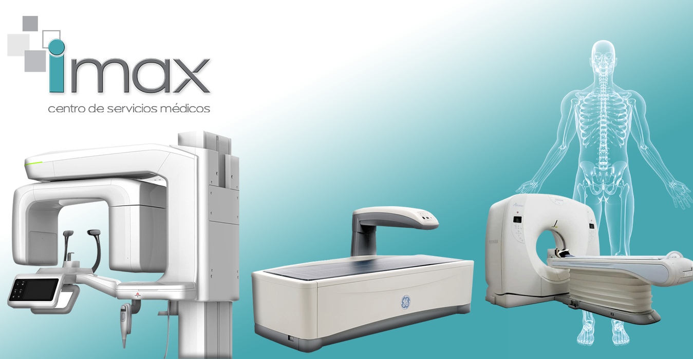

- Alberdi 455, Clorinda, Formosa, Argentina
- Lunes - Viernes 8.00 - 12.00 y 16.00 - 20.00hs
Guardia las 24 hs
-

RESULTADOS ONLINE
Imax es un Centro de Estudios y Servicios Medicos, que abre sus puertas en Clorinda luego de muchos años de inversion y desarrollo, con el objetivo de brindar a los habitantes de toda la zona, la posibilidad de acceder a servicios de diagnostico de alta calidad, sin tener que trasladarse hasta grandes urbes como ha sido hasta ahora. -

¿Dudas?
Puede saber mas a cerca de nosotros
en la pestaña "Sobre nosotros"
Calidad y seguridad
Utilizamos tecnología de punta y empleamos a un equipo de verdaderos expertos.
Nuevo equipamiento
Se incorporó recientemente un nuevo equipamiento de avanzada tecnología para analisis.
Atención médica excelente
Se coordina cada aspecto de tu atención médica y los equipos de expertos trabajan juntos para brindarte exactamente la atención que necesitas.
Estudios Médicos:
Procedimiento para el que se usa una computadora conectada a una
máquina de rayos X a fin de crear una serie de imágenes detalladas del
interior del cuerpo. Las imágenes se toman desde diferentes ángulos y se
usan para crear vistas tridimensionales (3D) de los tejidos y órganos.
La densitometría ósea es una prueba para determinar la densidad mineral ósea. Se puede
realizar con rayos x, ultrasonidos o isótopos radiactivos. Sirve para el diagnóstico de
osteoporosis. El test se realiza con el aparato que mide las imágenes y da una cifra de la
cantidad mineral ósea por superficie.
Una mamografía es una imagen de la glándula mamaria tomada con
rayos X. Los médicos usan las mamografías para detectar patologías en
sus estadíos iniciales.
La ortopantomografía o radiografía panorámica es una técnica radiológica que representa, en
una única película, una imagen general de los maxilares, la mandíbula y los dientes. Por tanto,
es de primordial utilidad en el área dentomaxilomandibular.
Una ecografía es una prueba de diagnóstico por imágenes. También se
denomina sonografía o ultrasonografía. Utiliza ondas de sonido de alta
frecuencia para producir imágenes de los órganos internos. Las ondas
sonoras se envían y rebotan cuando alcanzan los órganos.
La ecocardiografía, también conocida como ultrasonido cardíaco o ecocardiograma, es una
tecnología sanitaria que usa técnicas estándares de ultrasonido para producir imágenes en
rebanadas de dos dimensiones del corazón. Además, los últimos sistemas de ultrasonido
ahora emplean imágenes en tiempo real en 3D.
El Holter es un instrumento cardiológico que registra la actividad eléctrica del corazón durante
varias horas. Con él se miden la actividad electrocardiográfica ...
Presurometria 24 ha (MAPA)
El MAPA (monitoreo ambulatoria de la presión arterial), también llamado holter de tensión arterial, es un método técnico no invasivo que pretende obtener una medición de la presión arterial durante un período de tiempo determinado, generalmente 24 horas.
El MAPA (monitoreo ambulatoria de la presión arterial), también llamado holter de tensión arterial, es un método técnico no invasivo que pretende obtener una medición de la presión arterial durante un período de tiempo determinado, generalmente 24 horas.
La ergometría, también llamada prueba de esfuerzo, es la prueba diagnóstica que consiste en
realizar un registro del electrocardiograma durante un esfuerzo, caminando en una cinta
.
Estudios funcionales respiratorios
La espirometría es la técnica de exploración de la función respiratoria que mide los flujos y los
volúmenes respiratorios útiles para el diagnóstico y el seguimiento de patologías respiratorias.
Esta prueba permite evaluar la capacidad de ejercicio en términos de la distancia total
recorrida durante seis minutos, el grado de oxigenación, la respuesta de la frecuencia cardíaca
y tensión arterial, la sensación subjetiva de esfuerzo medida por una escala (Borg) ante un
esfuerzo rutinario (caminar).
Un electroencefalograma es una prueba que detecta la actividad eléctrica del cerebro
mediante pequeños discos metálicos (electrodos) fijados sobre el cuero cabelludo. Las
neuronas cerebrales se comunican a través de impulsos eléctricos y están activas todo el
tiempo, incluso mientras duermes.